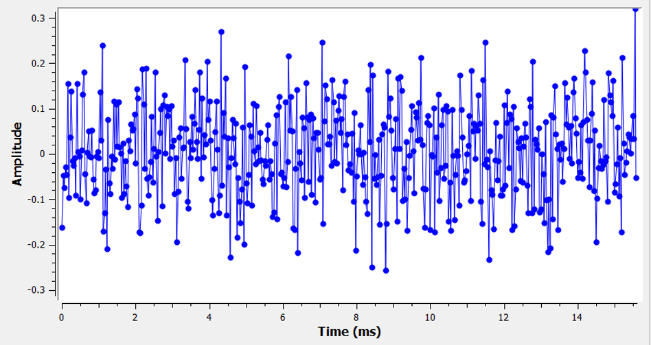
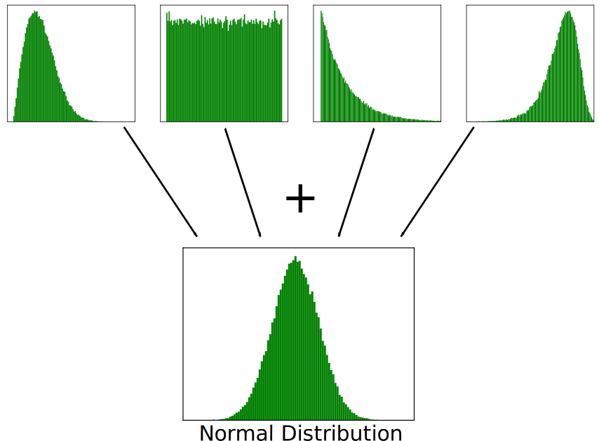
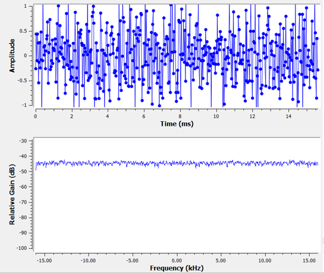

7. le Bruit et les dB¶
Dans ce chapitre, nous aborderons le bruit, notamment la façon dont il est modélisé et traité dans un système de communication sans fil. Les concepts comprennent l’AWGN, le bruit complexe et le SNR/SINR. Nous introduirons également les décibels (dB) en cours de route, car ils sont largement utilisés dans les communications sans fil et la radio logicielle.
Le Bruit Gaussien¶
La plupart des gens connaissent le concept de bruit: des fluctuations indésirables qui peuvent masquer le ou les signaux souhaités. Le bruit ressemble à quelque chose comme:
{kind=link}
Notez que la valeur moyenne est égale à zéro dans le graphique temporel. Si la valeur moyenne n’était pas nulle, nous pourrions soustraire la valeur moyenne, l’appeler un biais, et il nous resterait une moyenne de zéro. Notez également que les points individuels du graphique ne sont pas “uniformément aléatoires”, c’est-à-dire que les grandes valeurs sont plus rares et la plupart des points sont plus proches de zéro.
Nous appelons ce type de bruit “bruit gaussien”. C’est un bon modèle pour le type de bruit provenant de nombreuses sources naturelles, comme les vibrations thermiques des atomes dans le silicium des composants RF de notre récepteur. Le théorème de la limite centrale nous dit que la somme de nombreux processus aléatoires aura tendance à avoir une distribution gaussienne, même si les processus individuels ont d’autres distributions. En d’autres termes, lorsqu’un grand nombre d’événements aléatoires se produisent et s’accumulent, le résultat semble approximativement gaussien, même si les événements individuels n’ont pas une distribution gaussienne.
La distribution gaussienne est également appelée distribution “normale” (rappelons une courbe en cloche).
La distribution gaussienne possède deux paramètres: la moyenne et la variance. Nous avons déjà discuté de la façon dont la moyenne peut être considérée comme nulle, car vous pouvez toujours supprimer la moyenne, ou le biais, si elle n’est pas nulle. La variance modifie la “puissance” du bruit. Une variance plus élevée se traduira par des nombres plus importants. C’est pour cette raison que la variance définit la puissance du bruit.
La variance est égale à l’écart-type au carré ().
Decibels (dB)¶
Nous allons prendre une brève pause pour présenter officiellement les dB. Vous avez peut-être déjà entendu parler de dB, et si vous êtes déjà familier avec cette technologie, vous pouvez sauter cette section.
Le travail en dB est extrêmement utile lorsque nous devons traiter simultanément des petits et des grands nombres, ou simplement un ensemble de très grands nombres. Considérez combien il serait fastidieux de travailler avec des nombres de l’échelle de l’exemple 1 et de l’exemple 2.
Exemple 1: Le signal 1 est reçu à 2 watts et le plancher de bruit est à 0.0000002 watts.
Exemple 2: un broyeur d’ordures est 100 000 fois plus bruyant qu’une zone rurale calme, et une tronçonneuse est 10 000 fois plus bruyante qu’un broyeur d’ordures (en termes de puissance des ondes sonores).
Sans dB, c’est-à-dire en travaillant en termes “linéaires” normaux, nous devons utiliser beaucoup de 0 pour représenter les valeurs des exemples 1 et 2. Franchement, si nous devions représenter quelque chose comme le signal 1 en fonction du temps, nous ne verrions même pas le plancher de bruit. Si l’échelle de l’axe des y allait de 0 à 3 watts, par exemple, le bruit serait trop faible pour apparaître sur le graphique. Pour représenter ces échelles simultanément, nous travaillons avec une échelle logarithmique.
Pour illustrer davantage les problèmes d’échelle que nous rencontrons dans le traitement du signal, considérons les cascades ci-dessous de trois des mêmes signaux. La partie gauche représente le signal original en échelle linéaire, et la partie droite montre les signaux convertis en échelle logarithmique (dB). Les deux représentations utilisent exactement la même carte de couleurs, où le bleu est la valeur la plus basse et le jaune la plus haute. Vous pouvez à peine voir le signal de gauche dans l’échelle linéaire.

Pour une valeur x donnée, on peut représenter x en dB à l’aide de la formule suivante :
En Python:
x_db = 10.0 * np.log10(x)
Vous avez peut-être vu que 10 * est un 20 * dans d’autres domaines. Chaque fois que vous avez affaire à une puissance quelconque, vous utilisez 10, et vous utilisez 20 si vous avez affaire à une valeur qui n’est pas une puissance, comme la tension ou le courant. En DSP, nous avons tendance à traiter avec une puissance. En fait, il n’y a pas une seule fois dans ce manuel où nous devons utiliser 20 au lieu de 10.
Nous convertissons les dB en linéaires (nombres normaux) en utilisant:

En Python:
x = 10.0 ** (x_db / 10.0)
Ne vous laissez pas prendre par la formule, car il y a un concept clé à retenir ici. En DSP, nous traitons à la fois de très grands et de très petits nombres (par exemple, la force d’un signal par rapport à la force du bruit). L’échelle logarithmique en dB nous permet d’avoir une plus grande plage dynamique lorsque nous exprimons des nombres ou les traçons. Elle offre également certaines commodités, comme la possibilité d’additionner alors qu’on multiplierait normalement (comme nous le verrons dans le chapitre Link Budgets).
Les erreurs les plus courantes que les gens rencontrent lorsqu’ils sont novices en matière de dB sont les suivantes :
- Utiliser le log naturel au lieu du log base 10 car la fonction log() de la plupart des langages de programmation est en fait le log naturel.
- Oublier d’inclure le dB lors de l’expression d’un nombre ou de l’étiquetage d’un axe. Si nous sommes en dB, nous devons l’identifier quelque part.
- Lorsque vous êtes en dB, vous additionnez/soustrayez des valeurs au lieu de multiplier/diviser, par ex:
{kind=link}
Il est également important de comprendre que le dB n’est pas techniquement une “unité”. Une valeur en dB seule est sans unité, comme si quelque chose était 2x plus grand, il n’y a pas d’unités jusqu’à ce que je vous dise les unités. dB est une chose relative. En audio, quand on dit dB, on veut dire dBA, qui est l’unité du niveau sonore (le A est l’unité). Dans le domaine du sans fil, nous utilisons généralement les watts pour faire référence à un niveau de puissance réel. Par conséquent, vous pouvez voir l’unité dBW, qui est relative à 1 W. Vous pouvez également voir l’unité dBmW (souvent écrite dBm pour faire court) qui est relative à 1 mW. Par exemple, quelqu’un peut dire “notre émetteur est réglé sur 3 dBW” (donc 2 watts). Parfois, nous utilisons le terme dB seul, ce qui signifie qu’il est relatif et qu’il n’y a pas d’unité. On peut dire “notre signal a été reçu 20 dB au-dessus du bruit de fond”. Voici une petite astuces: 0 dBm = -30 dBW.
Voici quelques conversions courantes que je vous recommande de mémoriser :
| Linéaire | dB |
|---|---|
| 1x | 0 dB |
| 2x | 3 dB |
| 10x | 10 dB |
| 0.5x | -3 dB |
| 0.1x | -10 dB |
| 100x | 20 dB |
| 1000x | 30 dB |
| 10000x | 40 dB |
Enfin, pour mettre ces chiffres en perspective, voici quelques exemples de niveaux de puissance, en dBm :
| 80 dBm | Puissance d’émission d’une station de radio FM rurale |
| 62 dBm | Puissance maximale d’un émetteur radio amateur |
| 60 dBm | Puissance d’un micro-ondes domestique typique |
| 37 dBm | Puissance maximale d’une radio CB ou d’une radio amateur portative typique |
| 27 dBm | Puissance d’émission typique d’un téléphone cellulaire |
| 15 dBm | Puissance d’émission typique du WiFi |
| 10 dBm | Puissance d’émission maximale du Bluetooth (version 4) |
| -10 dBm | Puissance de réception maximale du WiFi |
| -70 dBm | Exemple de puissance reçue pour un signal radio amateur |
| -100 dBm | Puissance minimale reçue pour le WiFi |
| -127 dBm | Puissance reçue typique des satellites GPS |
Bruit dans le Domaine Fréquentiel¶
Dans le chapitre Het Frequentiedomein, nous avons abordé la correspondance temps-fréquence de la transformée de Fourier, c’est-à-dire ce à quoi ressemble un certain signal dans le domaine temporel dans le domaine fréquentiel. Et bien, à quoi ressemble un bruit gaussien dans le domaine des fréquences? Les graphiques suivants montrent un certain bruit simulé dans le domaine temporel (en haut) et un tracé de la densité spectrale de puissance (DSP) de ce bruit (en bas). Ces graphiques sont tirés de GNU Radio.
{kind=link}
Nous pouvons voir qu’il a à peu près la même apparence sur toutes les fréquences et qu’il est assez plat. Il s’avère que le bruit gaussien dans le domaine temporel est également un bruit gaussien dans le domaine fréquentiel. Alors pourquoi les deux graphiques ci-dessus ne sont-ils pas identiques? C’est parce que le graphique du domaine fréquentiel montre l’amplitude de la FFT, donc il n’y aura que des nombres positifs. Il est important de noter qu’il utilise une échelle logarithmique, c’est-à-dire qu’il indique l’amplitude en dB. Sinon, ces graphiques se ressembleraient. Nous pouvons le prouver par nous-mêmes en générant un peu de bruit (dans le domaine temporel) dans Python, puis en prenant la FFT.
import numpy as np
import matplotlib.pyplot as plt
N = 1024 # nombre d'échantillons à simuler, choisissez le nombre que vous voulez
x = np.random.randn(N)
plt.plot(x, '.-')
plt.show()
X = np.fft.fftshift(np.fft.fft(x))
X = X[N//2:] # ne regardez que les fréquences positives. rappelez-vous que // est juste un diviseur d'entier
plt.plot(np.real(X), '.-')
plt.show()
Notez que la fonction randn() utilise par défaut la moyenne = 0 et la variance = 1. Les deux graphiques ressembleront à ceci :

Vous pouvez alors produire le DSP plate que nous avions dans GNU Radio en prenant le log et en faisant la moyenne de plusieurs d’entre eux. Le signal que nous avons généré et dont nous avons fait la FFT était un signal réel (par opposition à un signal complexe), et la FFT de tout signal réel aura des parties négatives et positives correspondantes, c’est pourquoi nous n’avons sauvegardé que la partie positive de la sortie FFT (la seconde moitié). Mais pourquoi n’avons-nous généré que du bruit “réel”, et comment les signaux complexes entrent-ils en jeu ?
Bruit Complexe¶
Le bruit “gaussien complexe” est celui que nous rencontrons lorsque nous avons un signal en bande de base; la puissance du bruit est répartie de manière égale entre les parties réelles et imaginaires. Et surtout, les parties réelle et imaginaire sont indépendantes l’une de l’autre; connaître les valeurs de l’une ne vous donne pas les valeurs de l’autre.
Nous pouvons générer un bruit gaussien complexe en Python en utilisant :
n = np.random.randn() + 1j * np.random.randn()
Mais attendez! L’équation ci-dessus ne génère pas la même “quantité” de bruit que np.random.randn(), en termes de puissance (appelée puissance du bruit). Nous pouvons trouver la puissance moyenne d’un signal (ou d’un bruit) de moyenne nulle en utilisant :
power = np.var(x)
où np.var() est la fonction de variance. Ici, la puissance de notre signal n est 2. Afin de générer un bruit complexe avec une “puissance unitaire”, c’est-à-dire une puissance de 1 (ce qui rend les choses plus pratiques), nous devons utiliser:
n = (np.random.randn(N) + 1j*np.random.randn(N))/np.sqrt(2) # AWGN de puissance unitaire
Pour tracer un bruit complexe dans le domaine temporel, comme tout signal complexe, nous avons besoin de deux lignes:
n = (np.random.randn(N) + 1j*np.random.randn(N))/np.sqrt(2)
plt.plot(np.real(n),'.-')
plt.plot(np.imag(n),'.-')
plt.legend(['real','imag'])
plt.show()

Vous pouvez voir que les parties réelles et imaginaires sont complètement indépendantes.
À quoi ressemble un bruit gaussien complexe sur un graphique IQ? Rappelez-vous que le graphique IQ montre la partie réelle (axe horizontal) et la partie imaginaire (axe vertical), qui sont toutes deux des gaussiennes aléatoires indépendantes.
plt.plot(np.real(n),np.imag(n),'.')
plt.grid(True, which='both')
plt.axis([-2, 2, -2, 2])
plt.show()
{kind=link}
Il ressemble à ce que l’on pourrait attendre: une tache aléatoire centrée sur 0 + 0j, ou l’origine. Juste pour le plaisir, essayons d’ajouter du bruit à un signal QPSK pour voir à quoi ressemble le graphique IQ :

Maintenant, que se passe-t-il quand le bruit est plus fort ?

Nous commençons à comprendre pourquoi la transmission de données sans fil n’est pas si simple. Nous voulons envoyer autant de bits par symbole que possible, mais si le bruit est trop élevé, nous aurons des bits erronés à la réception.
AWGN¶
Le bruit blanc additif gaussien ou AWGN (pour Additive White Gaussian Noise en anglais) est une abréviation que vous entendrez souvent dans le monde du DSP et de la SDR. Le GN, qui veut dire bruit gaussien, nous en avons déjà parlé. Additif signifie simplement que le bruit est ajouté à notre signal reçu. Blanc, dans le domaine des fréquences, signifie que le spectre est plat sur toute la bande d’observation. En pratique, il sera presque toujours blanc, ou approximativement blanc. Dans ce manuel, nous utiliserons le bruit AWGN comme seule forme de bruit lorsque nous traiterons des liaisons de communication, des budgets de liaison, etc. Le bruit non-AWGN tend à être un sujet de niche.
SNR et SINR¶
Le rapport signal à bruit (RSB) ou (SNR) (pour signal to noise ratio en anglais) est la façon dont nous allons mesurer les différences d’intensité entre le signal et le bruit. Il s’agit d’un rapport, donc sans unité. Le SNR est presque toujours exprimé en dB dans la pratique. Souvent, en simulation, nous codons de manière à ce que nos signaux soient d’une puissance unitaire (puissance = 1). Ainsi, nous pouvons créer un rapport signal à bruit de 10 dB en produisant un bruit d’une puissance de -10 dB en ajustant la variance lorsque nous générons le bruit.
Si quelqu’un dit “SNR = 0 dB”, cela signifie que la puissance du signal et du bruit est la même. Un SNR positif signifie que notre signal est plus puissant que le bruit, tandis qu’un SNR négatif signifie que le bruit est plus puissant. La détection de signaux à un SNR négatif est généralement assez difficile.
Comme nous l’avons mentionné précédemment, la puissance d’un signal est égale à la variance du signal. Nous pouvons donc représenter le SNR comme le rapport entre la variance du signal et la variance du bruit:
Le rapport signal à interférence plus bruit (SINR pour signal to interference and noise ration en anglais) est essentiellement le même que le SNR, sauf que vous incluez l’interférence avec le bruit dans le dénominateur.
La définition de l’interférence dépend de l’application/de la situation, mais il s’agit généralement d’un autre signal qui interfère avec le signal d’intérêt, qui le empiète sur lui dans le domaine fréquentiel, et/ou qui ne peut pas être filtré pour une raison quelconque.
Ressources Externes (en anglais)¶
Autres ressources sur l’AWGN, le SNR et la variance: